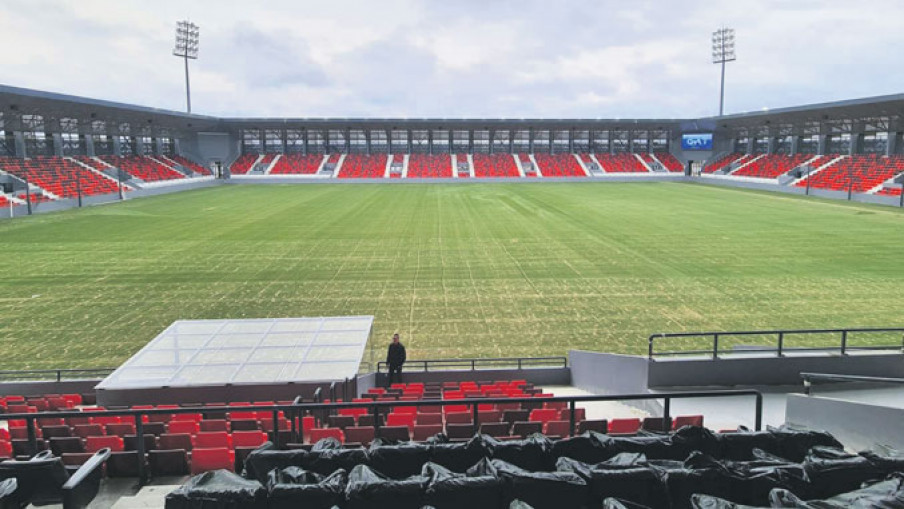
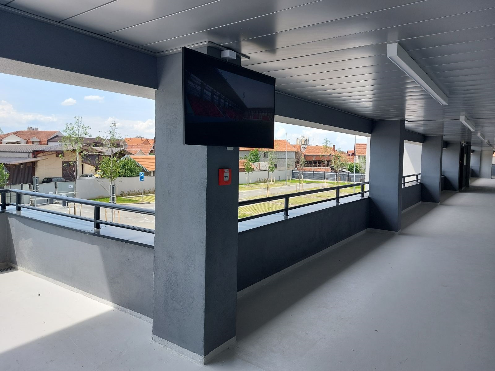
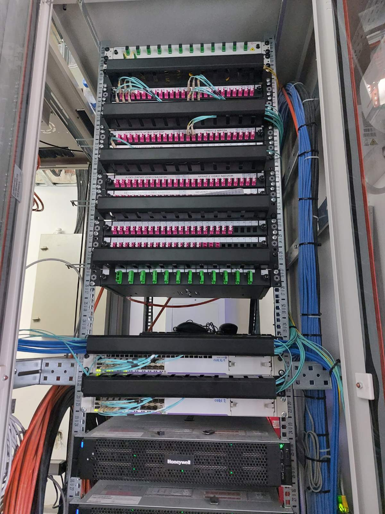
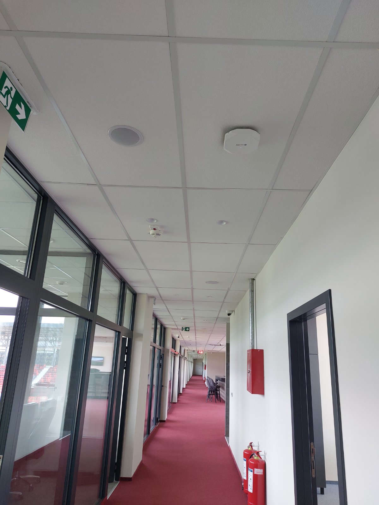

Aktivna mrežna oprema
Core i access mrežna infrastruktura za stabilno povezivanje sistema i distribuciju podataka kroz objekat.

Jedinstvena i pouzdana telekomunikaciona infrastruktura koja povezuje operativne, bezbednosne i multimedijalne sisteme stadiona, uz savremenu Wi-Fi 6 pokrivenost objekta.

Savremeni stadion oslanja se na veliki broj međusobno povezanih tehnoloških sistema. Mrežna infrastruktura morala je da obezbedi stabilnu osnovu za video-nadzor, digital signage, operativne servise i svakodnevni rad osoblja.
Rešenje je projektovano kao jedinstvena i skalabilna platforma, sa aktivnom mrežnom opremom i Wi-Fi 6 pristupnim tačkama koje omogućavaju pouzdanu komunikaciju i pokrivenost različitih zona stadiona.
Mreža je projektovana kao zajednička osnova za povezivanje korisnika, uređaja i ključnih sistema stadiona.
Core i access mrežna infrastruktura za stabilno povezivanje sistema i distribuciju podataka kroz objekat.
Savremena bežična infrastruktura prilagođena različitim funkcionalnim zonama i zahtevima korisnika stadiona.
Zajednička mrežna osnova za CCTV, digital signage i druge operativne i tehničke sisteme objekta.
Aktivna mrežna oprema, pristupne tačke i povezani sistemi implementirani su kao jedinstvena tehnološka celina.



Implementirano rešenje obezbeđuje centralizovanu, preglednu i skalabilnu mrežnu infrastrukturu spremnu da podrži svakodnevni rad stadiona, povezivanje tehničkih sistema i buduće proširenje objekta.